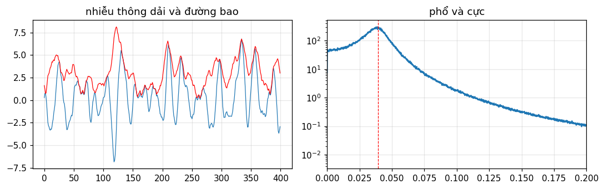
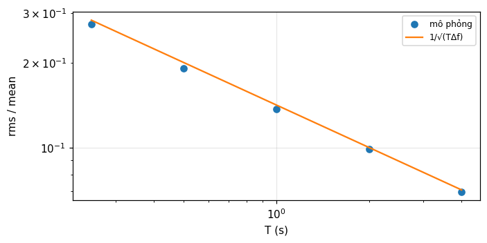
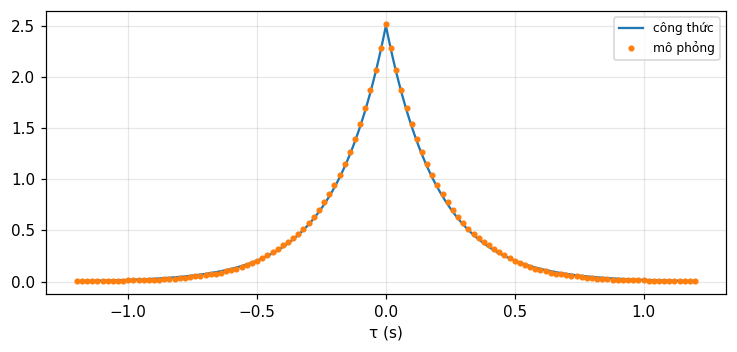

Quá trình ngẫu nhiên, phổ công suất và nhiễu
Từ chuỗi chữ số ngẫu nhiên và nhiễu qua bộ lọc (Bracewell) tới quá trình dừng, tự tương quan, mật độ phổ công suất, hệ tuyến tính, ergodic, lấy mẫu, tín hiệu giải tích và nhiễu nhiệt (Barkat).
Bài giảng (slide) Thực hành với Jupyter Notebook Quiz tự kiểm tra
Bài giảng (slide)
Quá trình ngẫu nhiên, phổ công suất và nhiễu
- Định nghĩa quá trình ngẫu nhiên, trung bình, tự tương quan, dừng theo nghĩa rộng và chặt, và kiểm bằng mô phỏng tập hợp.
- Nhận biết các quá trình mẫu: xung ngẫu nhiên, tuần hoàn, Gauss, Poisson, Bernoulli, bước đi ngẫu nhiên, Wiener, Markov.
- Liên hệ tự tương quan và mật độ phổ công suất, và tính đầu ra của hệ tuyến tính bất biến với đầu vào ngẫu nhiên: S_{yy}=|H|^2S_{xx}.
- Giải thích vì sao nhiễu qua bộ lọc trở nên Gauss, đường bao là Rayleigh, tách sóng bình phương cho phân bố mũ, và độ chính xác đo công suất nhiễu là 1/\sqrt{T\Delta f}.
- Dùng ergodic, định lý lấy mẫu cho quá trình ngẫu nhiên, biến đổi Hilbert và tín hiệu giải tích, và nhiễu nhiệt.
Dùng nút, chấm tròn hoặc phím ← → để chuyển slide.
Định nghĩa, thống kê bậc một và hai, tính dừng
- Quá trình ngẫu nhiên và tập hợp
- Trung bình, tự tương quan, dừng
- Tính chất của hàm tương quan
Tín hiệu ngẫu nhiên trong vật lý
Toàn bộ vật lý thấm đầy các hiện tượng ngẫu nhiên tự nhiên. Bracewell mở đầu bằng bản ghi nguồn vô tuyến ngoài thiên hà Cygnus A đi qua búp sóng của kính thiên văn vô tuyến: nguồn ít nhất gồm hai phần, nhưng có vầng rộng hơn, yếu hơn hay không thì không thấy được vì các "gợn" ngẫu nhiên; nguồn thiên văn bản thân cũng là nhiễu ngẫu nhiên (chương 17, tr. 445 đến 447). Các dao động thường có hành vi đặc trưng không phụ thuộc nguyên nhân vật lý, và chương này nói về những hiện tượng phổ quát ấy.
Định nghĩa quá trình ngẫu nhiên
Một quá trình ngẫu nhiên có thể xem là một họ biến ngẫu nhiên với thời gian t là tham số chạy qua mọi số thực; hình thức, X(t) ánh xạ mỗi phần tử của không gian mẫu tới một hàm thời gian. Tập các hàm mẫu cùng xác suất gọi là tập hợp (ensemble), hàm mẫu ký hiệu x(t) (Barkat, mục 3.1, tr. 141). Cố định t=t_0 thì X(t_0) là biến ngẫu nhiên. Ví dụ: X(t)=A\cos(\omega t+\Theta) với \Theta đều trên (0,2\pi); dao động chỉ do pha, nhưng khi pha cố định hàm mẫu là tất định (tr. 142).
Bốn loại quá trình
| Trạng thái | Thời gian | Tên |
|---|---|---|
| Liên tục | Liên tục | Quá trình liên tục |
| Rời rạc | Liên tục | Quá trình rời rạc |
| Liên tục | Rời rạc | Dãy ngẫu nhiên liên tục |
| Rời rạc | Rời rạc | Dãy ngẫu nhiên rời rạc |
(Barkat, tr. 143). Chuỗi chữ số của Bracewell là dãy rời rạc ở cả hai; nội suy sinc biến nó thành quá trình liên tục giới hạn băng.
Phân bố bậc một và bậc hai
Phân bố bậc một F_X(x;t)=P[X(t)\le x], mật độ bậc một f_X(x;t); bậc hai là phân bố đồng thời của X(t_1) và X(t_2); mô tả đầy đủ cần mọi bậc (Barkat, tr. 143 đến 144). May thay ta thường quan tâm quá trình có tính đều để biết bậc một và hai là đủ, gồm trung bình m_x(t)=E[X(t)] và tự tương quan R_{xx}(t_1,t_2)=E[X(t_1)X(t_2)] (tr. 145).
Dừng theo nghĩa rộng và chặt
Nếu m_x không đổi và R_{xx}(t_1,t_2) chỉ phụ thuộc \tau=t_1-t_2 thì X(t) dừng theo nghĩa rộng: R_{xx}(t+\tau,t)=R_{xx}(\tau). Dừng theo nghĩa chặt nếu mọi thống kê không đổi khi dịch gốc thời gian; dừng chặt kéo theo dừng rộng nhưng không ngược lại, vì điều kiện rộng chỉ ràng buộc thống kê bậc hai (Barkat, tr. 145 đến 146). Ví dụ 3.1: X=A\cos(\omega t+\Theta): trung bình 0 và R_{xx}(\tau)=\tfrac{A^2}2\cos\omega\tau; với A=2, f=1, \tau=0.1: 1.618 theo công thức và mô phỏng tập hợp, tại hai thời điểm t khác nhau.
Ví dụ 3.2: tung đồng xu và truyền nhị phân ngẫu nhiên
Tung đồng xu ở mỗi khoảng T; X(t)=+1 hay -1 trong khoảng thứ n tùy mặt ngửa hay sấp. Trung bình 0, bình phương trung bình 1. Nếu t_1,t_2 cùng khoảng thì R_{xx}=1; khác khoảng thì các lần tung độc lập nên R_{xx}=E[X(t_1)]E[X(t_2)]=0 (Barkat, ví dụ 3.2, tr. 147 đến 149). Số đo: cùng khoảng (1), khác khoảng (0); vậy R_{xx} phụ thuộc t_1 chứ không chỉ \tau, không dừng rộng. Thêm độ dời ngẫu nhiên đều \Theta trong (0,T) ta được Y(t)=X(t-\Theta) dừng rộng, gọi là truyền nhị phân ngẫu nhiên, với R_{yy}(\tau)=1-|\tau|/T: tại \tau=0.25T bằng 0.75 (tại hai t khác nhau).
Đồng phương sai, phức, tương quan chéo
Hai quá trình dừng chung nếu mỗi cái dừng và R_{xy}(t+\tau,t)=R_{xy}(\tau). Hàm đồng phương sai C_{xx}(t_1,t_2)=E\{[X(t_1)-m_x(t_1)][X(t_2)-m_x(t_2)]\}, và với quá trình phức Z=X+jY: R_{zz}(t_1,t_2)=E[Z(t_1)Z^*(t_2)] (Barkat, tr. 147). Ví dụ 3.3: I(t)=X\cos\omega t+Y\sin\omega t, Q(t)=Y\cos\omega t-X\sin\omega t với X,Y trung bình 0, không tương quan, phương sai \sigma^2: R_{iq}(t+\tau,t)=\sigma^2\sin\omega\tau (tr. 152; bản in ghi dấu âm, nhưng bước trung gian của chính sách và mô phỏng đều cho dấu dương). Với \sigma=1, f=1, \tau=0.1: 0.5878.
Tính chất của tự tương quan
- R_{xx}(t_2,t_1)=R_{xx}^*(t_1,t_2); nếu thực thì đối xứng qua t_1=t_2.
- R_{xx}(t,t)=E[|X(t)|^2]\ge0 và bất đẳng thức Schwarz |R_{xx}(t_1,t_2)|^2\le E[|X(t_1)|^2]E[|X(t_2)|^2].
- Xác định không âm: \sum_i\sum_ja_ia_j^*R_{xx}(t_i,t_j)\ge0.
- Với dừng rộng thực: R_{xx}(-\tau)=R_{xx}(\tau), R_{xx}(0)=\sigma_x^2+m_x^2, |R_{xx}(\tau)|\le R_{xx}(0), và R_{xx}(\infty)=m_x^2.
(Barkat, mục 3.3, tr. 153 đến 155). Tương quan chéo: R_{xy}(\tau)=R_{yx}^*(-\tau) và |R_{xy}(\tau)|^2\le R_{xx}(0)R_{yy}(0). Số đo với pha ngẫu nhiên: R(0) = 2 =A^2/2 và |R(\tau)|\le R(0) trên lưới.
Tự kiểm tra phần 1
- Vì sao tung đồng xu theo khoảng không dừng rộng, mà thêm độ dời ngẫu nhiên thì có?
- R_{xx}(0) bằng gì?
- Dừng chặt và dừng rộng khác nhau thế nào?
Gợi ý: R phụ thuộc vị trí trong khoảng, độ dời đều làm trung bình hóa vị trí; E[X^2]=\sigma^2+m^2; chặt ràng buộc mọi bậc.
Một số quá trình ngẫu nhiên tiêu biểu
- Xung ngẫu nhiên và quá trình tuần hoàn
- Gauss, Poisson, Bernoulli
- Bước đi ngẫu nhiên, Wiener, Markov
Xung đã biết dạng, biên độ và thời điểm đến ngẫu nhiên
Trong radar và sonar, tín hiệu về là X(t)=A\,s(t-\Theta) với A và \Theta độc lập và s tất định. Trung bình E[X(t)]=E[A]\,[s*f_\Theta](t) là tích chập của xung với mật độ của thời điểm đến, và R_{xx}(t_1,t_2)=E[A^2]\int s(t_1-\theta)s(t_2-\theta)f_\Theta(\theta)d\theta (Barkat, mục 3.4.1, tr. 156 đến 157). Số đo: s=\Pi(t), A đều trên (1,3), \Theta đều trên (0,1): E[X(1.25)] = 0.5 =2\times0.25 và R_{xx}(0.5,0.5) = 4.3333 =E[A^2], bằng tích phân và mô phỏng.
Nhiều xung
X(t)=\sum_{k=1}^nA_ks(t-\Theta_k) với 2n biến độc lập, A_k cùng phân bố, \Theta_k cùng phân bố: E[X(t)]=nE[A_k][s*f_\Theta] và R_{xx}=nE[A_k^2]\int s s f_\Theta+(n^2-n)E[A_k]^2\prod\int sf_\Theta (mục 3.4.2, tr. 157 đến 158). Với n=3 trong ví dụ trước: E[X(1.25)] = 1.5 theo công thức và mô phỏng.
Quá trình tuần hoàn và cyclostationary
X(t) tuần hoàn chu kỳ T nếu mọi hàm mẫu tuần hoàn. Định lý: nếu X dừng rộng thì R_{xx} tuần hoàn khi và chỉ khi X tuần hoàn (chứng minh qua Tchebycheff với Y=X(t+T)-X(t), \sigma_y^2=2[R(0)-R(T)]). Hệ quả: X=s(t-\Theta) với s tuần hoàn và \Theta đều trên (0,T) dừng rộng (Barkat, mục 3.4.3, tr. 158 đến 160). Quá trình cyclostationary có trung bình và tự tương quan tuần hoàn cùng chu kỳ; thêm độ dời ngẫu nhiên đều thì dừng, như nhị phân ngẫu nhiên ở phần 1. Số đo: X=\text{sq}(t-\Theta) (sóng vuông biên độ 1, chu kỳ 1): trung bình 0, R(0) = 1, R(0.5) = -1.
Quá trình Gauss
X(t) là Gauss nếu X(t_1),\ldots,X(t_n) đồng thời Gauss với mọi n và mọi t_i. Vì Gauss nhiều chiều chỉ phụ thuộc vector trung bình và ma trận hiệp phương sai, quá trình Gauss dừng rộng thì cũng dừng chặt; và không tương quan là độc lập (Barkat, mục 3.4.4, tr. 161 đến 163). Đây là mô hình của nhiễu nhiệt và của nhiễu qua bộ lọc (giới hạn trung tâm). Số đo: quá trình y_t=\rho y_{t-1}+w_t, \rho=0.8, \sigma_w=1 có R(k)=\sigma^2\rho^{|k|} với \sigma^2=1/(1-\rho^2) = 2.7778: R(1) = 2.2222 theo mô phỏng và công thức.
Quá trình Poisson
Chia [0,t) thành n khoảng rất nhỏ \Delta t, mỗi khoảng là một phép thử Bernoulli độc lập với xác suất \lambda\Delta t có một điểm. Số điểm N(0,t) là nhị thức n=t/\Delta t, p=\lambda\Delta t; ở giới hạn nó là Poisson P[N=k]=(\lambda t)^ke^{-\lambda t}/k! (Barkat, mục 3.4.5, tr. 163 đến 166). Số đo: \lambda=2, t=1.5, k=3: 0.224 theo Poisson, theo nhị thức n=10^6 và mô phỏng; khoảng giữa các điểm có trung bình 0.5 =1/\lambda (đó là phân bố mũ của module 10).
Bernoulli và nhị thức
Quá trình Bernoulli là dãy phép thử độc lập X[n]\in\{0,1\}; tổng S[n]=\sum X[k] là quá trình nhị thức với P[S[n]=k]=\binom nk p^kq^{n-k} (Barkat, mục 3.4.6, tr. 166 đến 168). Poisson là giới hạn liên tục của nó. Số đo: n=20, p=0.3: E[S] = 6, phương sai 4.2, và P[S=6] = 0.1916.
Bước đi ngẫu nhiên
Tung đồng xu công bằng mỗi T giây; bước sang phải \Delta nếu ngửa, sang trái nếu sấp: X(nT)=(2k-n)\Delta với k số lần ngửa, P=\binom nk/2^n. Trung bình 0, E[X^2(n)]=n\Delta^2; nhờ gia số độc lập, R_{xx}(n_1,n_2)=\Delta^2\min(n_1,n_2) (Barkat, mục 3.4.7, tr. 168 đến 170). Số đo với \Delta=1, n_1=10, n_2=25: 10 theo công thức và mô phỏng 2\cdot10^5 bước đi.
Quá trình Wiener
Wiener (Wiener-Levy, chuyển động Brown) là giới hạn của bước đi ngẫu nhiên khi n\to\infty, T\to0 sao cho nT=t và \Delta^2=\alpha T giữ phương sai hữu hạn. Theo giới hạn trung tâm W(t) là Gauss trung bình 0, phương sai \alpha t, gia số độc lập, và R_{ww}(t_1,t_2)=\alpha\min(t_1,t_2) (tr. 170 đến 171). Số đo với \alpha=0.5: phương sai tại t=4 là 2, R_{ww}(2,3) = 1; quá trình không dừng vì phương sai tăng theo t.
Markov
X(t) là Markov (bậc nhất) nếu giá trị hiện tại chỉ phụ thuộc giá trị liền trước: f(x_n\mid x_{n-1},\ldots,x_1)=f(x_n\mid x_{n-1}); khi biết hiện tại thì quá khứ và tương lai độc lập; mật độ chung f(x_1)\prod f(x_k\mid x_{k-1}) (Barkat, mục 3.4.8, tr. 172 đến 173). Phương trình Chapman-Kolmogorov: f(x_n\mid x_m)=\int f(x_n\mid x_k)f(x_k\mid x_m)dx_k với m<k<n. Số đo với X_n=\rho X_{n-1}+w_n Gauss (\rho=0.8): mật độ hai bước tại x_2=1 cho x_0=1 là 0.2995 theo tích phân Chapman-Kolmogorov và theo N(\rho^2x_0,\sigma_w^2(1+\rho^2)).
Tự kiểm tra phần 2
- R_{xx} của bước đi ngẫu nhiên là gì và vì sao?
- Quá trình Poisson liên hệ nhị thức thế nào?
- Khi nào quá trình Gauss dừng rộng là dừng chặt?
Gợi ý: \Delta^2\min(n_1,n_2) do gia số độc lập; giới hạn n\to\infty, p=\lambda\Delta t; luôn luôn.
Nhiễu từ chữ số ngẫu nhiên: biên độ, tương quan, phổ
- Chữ số ngẫu nhiên, độc lập, tương quan
- Tự tương quan và phổ sau bộ lọc
- Nhiễu thông dải, đường bao, đo công suất
Biểu diễn bằng chữ số ngẫu nhiên
Ta dùng các chữ số liên tiếp của \pi (từ 0 đến 9, mỗi chữ số có khả năng như nhau), coi t là thời gian với một chữ số mỗi đơn vị; dãy \{y_t\} có thể xem là mẫu của một dạng sóng giới hạn băng và ta vẽ đường trơn qua các điểm theo định lý lấy mẫu (Bracewell, tr. 447 đến 448). Trung bình của 32 chữ số đầu là 4.84; ta hy vọng nó tiến về 4.5 khi N\to\infty, và phương sai tiến về giá trị của phân bố đều rời rạc 8.25 (tr. 449 đến 450).
Trung bình và phương sai như mômen của p(y)
Gọi a(y) là số lần giá trị y xuất hiện; a(y)/N\to p(y)=0.1. Do đó trung bình giới hạn \mu=\sum yp(y)=4.5 và phương sai giới hạn \sum(y-\mu)^2p(y)=8.25 (Bracewell, tr. 449 đến 450). Số đo: \sum yp = 4.5, phương sai 8.25, và cả hai bằng kết quả của 10^6 chữ số ngẫu nhiên.
Lọc một dãy ngẫu nhiên: biên độ trở thành Gauss
Cho \eta_t=y_t+y_{t+1}+\cdots+y_{t+9}, tức qua bộ lọc có đáp ứng xung \{1\,1\,\ldots\,1\} (10 số 1). Nếu các chữ số độc lập, phân bố của \eta là tích chập 10 lần của p(y) (Bracewell, tr. 451 đến 454). Theo giới hạn trung tâm nó gần chuẩn với trung bình 45 và phương sai 82.5 (mười lần các giá trị trước). Số đo: P(40\le\eta\le50) = 0.4499 tính chính xác qua tích chập; xấp xỉ chuẩn cho 0.4552. Đây là hiện tượng rộng rãi: biên độ của tín hiệu ngẫu nhiên đi ra từ bộ lọc gần chuẩn.
Về tính độc lập: các phép thử của Bracewell
Ta cần biết các chữ số có độc lập không. Các chữ số có thể xuất hiện đều nhưng vẫn phụ thuộc: 3.0123456789\,0123\ldots tuần hoàn. Một phép thử: y_{t+1} qua 4.5 hay ở cùng phía với y_t với xác suất bằng nhau; thấy 15 lần qua và 16 lần không. Phép thử mạnh hơn: độ dài các chuỗi trên hoặc dưới 4.5 có xác suất p_k=2^{-k} (Bracewell, tr. 451 đến 452). Số đo với 10^6 chữ số ngẫu nhiên: chuỗi độ dài 1 chiếm 0.5, độ dài 2 chiếm 0.25, độ dài 3 chiếm 0.125.
Hệ số tương quan và cách đếm bốn góc
Vẽ y_{t+1} theo y_t (hình 17.5). Hệ số tích-mômen là hiệp phương sai chia giá trị lớn nhất; cách nhanh hơn là chia biểu đồ thành bốn góc tại điểm trung vị, lấy (số điểm ở góc 1 và 3 trừ số ở 2 và 4) chia tổng số điểm, được \psi=0.03 cho các chữ số (tr. 452 đến 453). Cả hai hệ số có thể nhỏ mà vẫn phụ thuộc (hình 17.6), nên hệ số tương quan chưa đủ chứng minh độc lập. Với dữ liệu Gauss có \psi=\tfrac2\pi\arcsin\rho, tức \rho=\sin(\tfrac\pi2\psi) (bài tập 8, tr. 470). Số đo: \rho=0.9 cho \psi = 0.713 trong mô phỏng, và công thức cho 0.713.
Tự tương quan của đầu ra bằng tự tương quan của đáp ứng xung
Từ dãy không tương quan \{y_t\} trừ trung bình, tạo \{\eta_t\}=\{I_t\}*\{y_t\} với \sum I_t=1. Bracewell chứng minh rằng tự tương quan chuẩn hóa giới hạn của đầu ra là C(\tau)=\dfrac{\{I\}\star\{I\}}{\text{chuẩn hóa}}: tự tương quan của dãy ban đầu không tương quan, sau khi qua bộ lọc, là tự tương quan của đáp ứng xung (tr. 455 đến 458). Với tổng chạy 10 số: C(1) = 0.9 và C(2) = 0.8 (bằng 1-|\tau|/10; cách đếm bốn góc trên 20 điểm cho 0.8 và 0.6). Với \{g\}=\{5\,3\,1\,1\}: C(1),C(2),C(3) = 0.5278, 0.2222, 0.1389.
Phổ: đầu vào trắng, đầu ra nhân với |T|^2
Dạng sóng V(t)=\sum y_j\,\text{sinc}(t-j) có phổ S(f)=\sum y_je^{-i2\pi jf}\Pi(f), và phổ công suất SS^* tiến về phẳng rồi cắt ở |f|=\tfrac12 khi số số hạng tăng; tự tương quan tương ứng là C(\tau)=\text{sinc}\,\tau (Bracewell, tr. 458 đến 460). Qua bộ lọc có hàm truyền T, W=V*I\supset ST, nên phổ công suất đầu ra là SS^*TT^*\propto TT^*\Pi(f), tức biến đổi của [I*I]*\text{sinc}\,t; TT^* là hàm truyền công suất (tr. 461). Hai bộ lọc nối tiếp: hàm truyền công suất tổng là tích. Số đo: tổng chạy 10 số tại f=0.05: |T|^2=[\sin(10\pi f)/\sin(\pi f)]^2 = 40.9 và ước lượng Welch từ mô phỏng 41.4.
Nhiễu thông thấp Gauss: dãy nhị thức
Bracewell làm bản ghi nhiễu dài bằng cách chập các chữ số của Kendall và Smith (1940) với \{1\,5\,10\,10\,5\,1\}; tự tương quan tỉ lệ \{1\,5\,10\,10\,5\,1\}\star\{\ldots\}=\{1\,10\,45\,120\,210\,252\,210\,120\,45\,10\,1\}=\{1\,1\}^{*10}, xấp xỉ Gauss 252\exp[-\pi(0.24n)^2] (tr. 462 đến 463). Số đo: nhị thức và Gauss tại n=1,\ldots,5 là 210 với 210, 120 với 122, 45 với 49, 10 với 14, 1 với 3 (làm tròn); và đỉnh của phổ \tfrac1{0.24}e^{-\pi(f/0.24)^2} là 4.17 tại f=0.
Nhiễu thông dải: bộ cộng hưởng tắt dần
Bracewell tạo nhiễu thông dải từ y_t=ay_{t-1}+by_{t-2}+\epsilon_t với a=1.84, b=-0.9 và \epsilon_t đều ngẫu nhiên trong (-0.5,0.5): bộ cộng hưởng tắt dần bị kích thích ngẫu nhiên, phổ đỉnh quanh giữa băng (tr. 463 đến 465). Cực tại re^{\pm i\omega} với r=\sqrt{-b} = 0.9487 và \cos\omega=a/2r, nên tần số đỉnh 0.0392 chu kỳ trên mẫu; phổ Welch từ mô phỏng đỉnh ở 0.039. Phổ không Gauss nhưng biên độ thì Gauss xấp xỉ; nếu nhiều bộ cộng hưởng như thế nối tiếp, phổ tiến về Gauss quanh trung tần.

Đường bao của nhiễu thông dải là Rayleigh
Đường bao r=\sqrt{y^2+z^2} với z là biến đổi Hilbert của y. Nếu y Gauss và z có cùng phân bố và độc lập với y (p(y)p(z)dydz=\alpha e^{-\pi\alpha(y^2+z^2)} theo tọa độ cực), thì p(r)=2\pi\alpha re^{-\pi\alpha r^2}: Rayleigh, viết theo bình phương trung bình \langle r^2\rangle là p(r)=\dfrac{2r}{\langle r^2\rangle}e^{-r^2/\langle r^2\rangle} (Bracewell, tr. 465 đến 466). Ý chính: biến đổi Hilbert dịch mỗi thành phần Fourier một lượng khác nhau nên cho chồng chất mới độc lập cùng thống kê. Số đo (Hilbert bằng FFT): trung bình r/\sigma = 1.2563 =\sqrt{\pi/2}, và độ lệch cực đại của phân bố tích lũy khỏi Rayleigh 0.005.
Tách sóng nhiễu
Bộ tách sóng tuyến tính cho |y(t)| có cùng phân bố biên độ Gauss (phần dương) và cùng đường bao Rayleigh. Bộ tách sóng bình phương cho y^2, đường bao là V=r^2; từ dV=2r\,dr, p(V)=\dfrac1{\langle V\rangle}e^{-V/\langle V\rangle}: phân bố mũ cắt cụt (Bracewell, tr. 466). Số đo: với \sigma=1, E[r^2] = 2 và phương sai của V = 4 bằng bình phương trung bình (đặc trưng của phân bố mũ: độ lệch chuẩn bằng trung bình), theo mô phỏng và theo tích phân.
Đo công suất nhiễu: giới hạn độ chính xác
Nhiễu có phổ công suất R(f) qua tách sóng bình phương rồi bộ làm trơn tuyến tính có hàm truyền công suất S(f). Tỉ số độ lệch bình phương trung bình của dao động trên giá trị trung bình là \dfrac{\text{rms}}{\text{mean}}=\dfrac1{\sqrt{\tau\Delta f}}, với \tau là độ rộng tương đương của bộ làm trơn và \Delta f độ rộng tự tương quan của R (module 8): \Delta f=\tfrac12W_{R\star R} và \tau=W_S (Bracewell, tr. 466 đến 468). Với băng chữ nhật \Delta f và trung bình trượt T: \tau=T. Số đo: T=1 s, \Delta f=50 Hz: lý thuyết 0.1414; mô phỏng nhiễu băng hẹp và tách sóng bình phương cho 0.137. Muốn giảm dao động mười lần cần tăng tích T\Delta f một trăm lần.

Quy tắc ngón tay cái và bài tập 4
Bài 1 (tr. 469): quy tắc thường được trích rằng giá trị hiệu dụng của nhiễu bằng một phần năm giá trị đỉnh-đỉnh. Số đo với nhiễu Gauss: \sigma/(\max-\min) trung bình là 0.202 với 100 mẫu và 0.155 với 1000 mẫu; quy tắc đúng cho khoảng 100 mẫu và phụ thuộc số mẫu nhìn thấy. Bài 4 (tr. 469 đến 470): số lần cắt lên không mỗi giây \nu=\dfrac1{2\pi}\arccos\gamma_1 với \gamma_1 là hệ số tương quan lân cận của dãy Gauss; với tổng chạy 10 số \gamma_1=0.9 nên \nu = 0.0718 mỗi mẫu, mô phỏng 0.072.
Tự kiểm tra phần 3
- Vì sao nhiễu qua bộ lọc có biên độ gần Gauss?
- Tự tương quan của đầu ra bộ lọc từ nhiễu trắng là gì?
- Đường bao của nhiễu Gauss thông dải và bình phương của nó có phân bố nào?
Gợi ý: đầu ra là tổng có trọng số nên giới hạn trung tâm; tự tương quan của đáp ứng xung; Rayleigh và mũ.
Mật độ phổ công suất và hệ tuyến tính bất biến
- Mật độ phổ công suất, Wiener-Khinchin
- Đầu ra hệ tuyến tính: mạch RC
- Ergodic và lấy mẫu
Mật độ phổ công suất
Với tín hiệu tất định có biến đổi Fourier S(f). Hàm mẫu của quá trình thường không khả tích tuyệt đối, nên ta cắt x_T(t) giữa -T và T, lấy X_T(f), công suất trung bình P_T=\int|X_T(f)|^2/2T\,df theo Parseval, rồi lấy kỳ vọng và cho T\to\infty: S_{xx}(f)=\lim_{T\to\infty}E[|X_T(f)|^2]/2T (Barkat, mục 3.5, tr. 174 đến 176). Định lý Wiener-Khinchin: S_{xx}(f) là biến đổi Fourier của R_{xx}(\tau). Với pha ngẫu nhiên: R=\tfrac{A^2}2\cos2\pi f_0\tau nên S=\tfrac{A^2}4[\delta(f-f_0)+\delta(f+f_0)], tổng công suất 2 =A^2/2 với A=2.
Nhiễu trắng và cặp R–S thường gặp
| R_{xx}(\tau) | S_{xx}(f) |
|---|---|
| \tfrac{N_0}2\delta(\tau) | \tfrac{N_0}2 (nhiễu trắng) |
| \tfrac{A^2}2\cos2\pi f_0\tau | \tfrac{A^2}4[\delta(f-f_0)+\delta(f+f_0)] |
| \sigma^2e^{-\alpha|\tau|} | \dfrac{2\alpha\sigma^2}{\alpha^2+4\pi^2f^2} |
| \sigma^2\text{sinc}\,\tau | \sigma^2\Pi(f) |
Đây là các cặp biến đổi của Bracewell (module 5 đến 7), giờ đọc như cặp tự tương quan và phổ công suất. Bracewell (tr. 459 đến 460) cũng chỉ ra rằng biến đổi của tự tương quan của các chữ số nội suy sinc là \Pi(f): nhiễu "trắng trong băng".
Hệ tuyến tính bất biến với đầu vào ngẫu nhiên
Đầu ra Y(t)=h(t)*X(t). Với X dừng rộng: trung bình m_y=m_xH(0); tương quan chéo R_{yx}(\tau)=R_{xx}(\tau)*h(\tau); tự tương quan R_{yy}(\tau)=R_{xx}(\tau)*h(\tau)*h(-\tau); phổ S_{yy}(f)=S_{xx}(f)|H(f)|^2, S_{yx}=S_{xx}H, S_{xy}=S_{xx}H^* (Barkat, mục 3.6.1, tr. 179 đến 185). Nhiều đầu: S_{zz}=S_{yy}|H_2|^2/|H_1|^2 và hệ "rời" khi các hàm truyền không chồng lên nhau (mục 3.6.2, tr. 185 đến 186). Đây là bản ngẫu nhiên của định lý tích chập: trong V_2=I*V_1 của module 9, giờ áp dụng cho năng lượng.
Ví dụ: nhiễu trắng qua mạch RC
Nhiễu trắng R_{xx}=\tfrac{N_0}2\delta(\tau) qua h(t)=\alpha e^{-\alpha t}, t\ge0. Cách 1 (chập): h*h(-\tau)=\tfrac\alpha2e^{-\alpha|\tau|}, nên R_{yy}(\tau)=\dfrac{N_0\alpha}4e^{-\alpha|\tau|}. Cách 2 (phổ): |H|^2=\alpha^2/(4\pi^2f^2+\alpha^2), S_{yy}=\tfrac{N_0}2|H|^2, biến đổi ngược cho cùng kết quả (Barkat, tr. 181 đến 183). Số đo với N_0=2, \alpha=5: R_{yy}(0) = 2.5 và R_{yy}(0.1) = 1.5163, theo công thức, theo tích phân số và theo mô phỏng SDE; và nếu đầu vào có trung bình 3 thì trung bình đầu ra 3.

Ergodic
X(t) là ergodic nếu mọi thống kê xác định được (với xác suất 1) từ một hàm mẫu: trung bình tập hợp bằng trung bình thời gian; điều kiện này hạn chế hơn dừng (hình 3.28). Thường chỉ cần dạng yếu: ergodic theo trung bình (E[X(t)]=\langle x(t)\rangle), theo tự tương quan, theo phân bố bậc một và theo mật độ phổ công suất (Barkat, mục 3.7, tr. 186 đến 189). Số đo: pha ngẫu nhiên A\cos(2\pi t+\Theta) là ergodic theo trung bình: trung bình thời gian trên 100 chu kỳ là 0. Phản ví dụ: X=C với C ngẫu nhiên là dừng nhưng không ergodic: trung bình thời gian của mỗi hàm mẫu là C, phương sai giữa các hàm mẫu 1, còn với pha ngẫu nhiên gần 0.
Định lý lấy mẫu cho quá trình ngẫu nhiên
Tín hiệu tất định giới hạn băng f_m tái tạo hoàn toàn từ mẫu ở 2f_m mỗi giây: g(t)=\sum g(n/2f_m)\,\text{sinc}(2f_mt-n); lấy mẫu dưới tần số Nyquist gây chồng phổ G_s=f_s\sum G(f-nf_s) (Barkat, mục 3.8, tr. 189 đến 191). Nếu X(t) dừng rộng với S_{xx}(f)=0 khi |f|>f_m, cũng tái tạo được theo nghĩa bình phương trung bình. Số đo: nhiễu Gauss giới hạn băng f_m=5 Hz lấy mẫu ở 10 Hz và nội suy sinc, sai số bình phương trung bình tương đối trong vùng giữa bản ghi 0.0001; lấy mẫu ở 6 Hz (dưới Nyquist) sai số 0.879.
Hilbert và tín hiệu giải tích
Bộ lọc vuông pha H(f)=-j\,\text{sgn}f (đáp ứng xung 1/\pi t) cho biến đổi Hilbert \hat x=x*\frac1{\pi t}; nó toàn thông, S_{\hat x\hat x}=S_{xx}, R_{\hat x\hat x}=R_{xx}, R_{\hat xx}(0)=0, và \hat{\hat X}=-X (Barkat, mục 3.10, tr. 201 đến 204). Tín hiệu giải tích \tilde x=x+j\hat x qua H=2 cho f>0: S_{\tilde x\tilde x}=4S_{xx} cho f>0 và 0 cho f<0, R_{\tilde x\tilde x}=2[R_{xx}+j\hat R_{xx}] (tr. 204 đến 205). Số đo: công suất trung bình của \tilde x bằng 2 lần của x (=1+1); và \hat{\hat x}+x lệch 3e-15. Đó là các cặp Hilbert của module 9 (bảng 9.1) cho quá trình ngẫu nhiên.
Tự kiểm tra phần 4
- Wiener-Khinchin nói gì?
- R_{yy} và S_{yy} của đầu ra hệ tuyến tính được tính ra sao từ đầu vào?
- Vì sao X=C ngẫu nhiên không ergodic?
Gợi ý: S là biến đổi Fourier của R; R_{yy}=R_{xx}*h*h(-\tau), S_{yy}=|H|^2S_{xx}; trung bình thời gian bằng C chứ không bằng E[C].
Liên tục, đạo hàm, tích phân và nhiễu nhiệt
- Liên tục, đạo hàm, tích phân bình phương trung bình
- Nhiễu nhiệt
- Tổng kết: từ Fourier tới nhiễu
Liên tục theo bình phương trung bình
Vì hàm mẫu là ngẫu nhiên, ta định nghĩa liên tục, đạo hàm và tích phân theo hội tụ bình phương trung bình: X(t) liên tục tại t nếu E[|X(t+\varepsilon)-X(t)|^2]\to0 khi \varepsilon\to0; với quá trình dừng rộng, điều đó tương đương R_{xx}(\tau) liên tục tại \tau=0 (Barkat, mục 3.9.1, tr. 194 đến 196). Vì E[|X(t+\varepsilon)-X(t)|^2]=2[R(0)-R(\varepsilon)]. Số đo với R=e^{-|\tau|}: tại \varepsilon=0.01 giá trị là 0.0199, tiến về 0.
Đạo hàm và tích phân của quá trình
Đạo hàm bình phương trung bình tồn tại nếu R_{xx}''(0) tồn tại, và khi đó R_{x'x'}(\tau)=-R_{xx}''(\tau); tích phân \int_a^bX(t)dt tồn tại nếu \int\int R_{xx}(t_1,t_2) hữu hạn (Barkat, mục 3.9.2 và 3.9.3, tr. 196 đến 201). Với R=e^{-|\tau|}, R'' không tồn tại tại 0 (góc nhọn): quá trình liên tục nhưng không khả vi; với R=e^{-\tau^2/2} thì R_{x'x'}(0) = 1, đúng -R''(0)=1, kiểm bằng sai phân hữu hạn của mô phỏng. Đây là định lý đạo hàm của Bracewell (f'\supset i2\pi sF) áp dụng cho R: S_{x'x'}=4\pi^2f^2S_{xx}.
Nhiễu nhiệt
Nhiễu điện do chuyển động ngẫu nhiên của electron trong vật dẫn gọi là nhiễu nhiệt. Mật độ phổ công suất của điện áp nhiễu trên hai đầu điện trở R là S_{nn}(f)=2kTR\dfrac{\alpha^2}{\alpha^2+\omega^2}, với k=1.38\times10^{-23} J/K là hằng số Boltzmann, T nhiệt độ tuyệt đối (Barkat, mục 3.11, tr. 205 đến 206). \alpha cỡ 10^{14} rad/s, tức 10^{13} Hz, nên trong mọi băng thực tế S_{nn}\approx2kTR: nhiễu trắng. Số đo với R=1\ \text{k}\Omega, T=290 K: 2kTR = 8.00e-18 V^2/Hz hai phía; tại f=1 GHz mật độ lệch khỏi phẳng chỉ 3.9e-09 tương đối.
Điện áp nhiễu hiệu dụng
Qua băng thông B (tích phân hai phía trên -B đến B), \overline{v^2}=\int S_{nn}df=4kTRB, hay v_{rms}=\sqrt{4kTRB}, công thức Johnson. Với R=1\ \text{k}\Omega, T=290 K, B=1 MHz: v_{rms} = 4.00e-06 V, tính bằng công thức và bằng tích phân số của phổ Lorentz tới B. Nhiễu này Gauss (giới hạn trung tâm cho vô số electron) và độc lập với dòng, nên cộng công suất khi ghép nối tiếp: hai điện trở nối tiếp có \overline{v^2} bằng tổng, như phương sai cộng (module 10).
Nhiễu nhiệt và độ chính xác đo
Kết hợp hai kết quả: nếu ta đo công suất nhiễu nhiệt bằng tách sóng bình phương và trung bình T=1 s trong băng B=1 MHz, độ chính xác tương đối là 1/\sqrt{TB} = 1.0e-03: sau 1 giây, ta xác định công suất nhiễu đến một phần một nghìn. Đó là nguyên lý của máy đo bức xạ trong thiên văn vô tuyến (Bracewell, tr. 466 đến 468): tăng độ nhạy bằng tăng cả băng thông và thời gian tích lũy. Ngược lại, tín hiệu yếu hơn nhiễu chỉ phát hiện được nếu độ lệch cỡ này nhỏ hơn tín hiệu.
Sơ đồ tổng: hai sách gặp nhau
| Ý tưởng | Bracewell | Barkat |
|---|---|---|
| Tổng độc lập là tích chập | ch. 16, tr. 429 | mục 1.6.2, tr. 52 |
| Nhiễu qua bộ lọc thành Gauss | ch. 17, tr. 451 đến 454 | mục 2.3.2, tr. 95 |
| Tự tương quan là biến đổi của phổ công suất | tr. 122, tr. 460 | mục 3.5, tr. 174 |
| Đầu ra bộ lọc: |T|^2 | tr. 461 | mục 3.6, tr. 181 |
| Đường bao Rayleigh | tr. 465 | mục 2.3.6, tr. 106 |
| Biến đổi Hilbert | ch. 13 và 9 | mục 3.10, tr. 201 |
Bài tập: hai nguồn nhiễu cộng nhau
Hai điện trở R_1=1\ \text{k}\Omega và R_2=4\ \text{k}\Omega ở 290 K nối tiếp, băng 1 MHz: nhiễu độc lập nên v_{rms}^2=v_1^2+v_2^2, v_{rms} = 8.95e-06 V, lớn hơn cả hai nhưng nhỏ hơn tổng v_1+v_2 = 1.20e-05 V. Đây là quy tắc "cộng theo phương sai" của module 10 áp dụng cho nhiễu điện; sai lầm hay gặp là cộng biên độ hiệu dụng. Số đo trùng cả tích phân số và mô phỏng.
Tự kiểm tra phần 5
- Khi nào quá trình dừng rộng khả vi theo bình phương trung bình?
- Điện áp nhiễu nhiệt hiệu dụng phụ thuộc thế nào vào R, T, B?
- Vì sao nhiễu nhiệt là trắng và Gauss?
Gợi ý: khi R''(0) tồn tại; \sqrt{4kTRB}; \alpha rất lớn nên phẳng, và giới hạn trung tâm cho vô số electron.
Tổng kết
- Quá trình ngẫu nhiên: họ biến ngẫu nhiên, đặc trưng bằng trung bình và tự tương quan; dừng rộng khi R chỉ phụ thuộc \tau.
- Phổ công suất S=\mathcal F[R]; hệ tuyến tính: S_{yy}=|H|^2S_{xx}; nhiễu qua bộ lọc gần Gauss, đường bao Rayleigh, bình phương mũ.
- Đo công suất nhiễu chính xác tới 1/\sqrt{T\Delta f}; nhiễu nhiệt trắng, v_{rms}=\sqrt{4kTRB}.
Điều cần mang theo
- Quá trình ngẫu nhiên đặc trưng bằng trung bình và tự tương quan; dừng rộng khi R chỉ phụ thuộc \tau; ergodic khi trung bình thời gian bằng trung bình tập hợp.
- Tự tương quan và mật độ phổ công suất là cặp Fourier; hệ tuyến tính nhân phổ với |H|^2 và làm tự tương quan thành R_{xx}*h*h(-\tau).
- Nhiễu qua bộ lọc: biên độ gần Gauss, đường bao Rayleigh, tách sóng bình phương cho phân bố mũ.
- Đo công suất nhiễu có dao động tương đối 1/\sqrt{T\Delta f}: tăng băng thông và thời gian tích lũy.
- Nhiễu nhiệt là trắng, Gauss, v_{rms}=\sqrt{4kTRB}, và công suất nhiễu độc lập cộng nhau.
📜 Bối cảnh lý thuyết & lịch sử
Bracewell trích Kendall và Smith (1940) về các chữ số ngẫu nhiên, Swarup, Thompson và Bracewell (1963) về cấu trúc Cygnus A, và các sách của Gardner (1988), Goodman (1966, 1996), Papoulis (1968), Parzen (1960), Ripley (1981) (chương 17, tr. 447, 469). Barkat lấy Papoulis, Peebles, Stark và Woods, Urkowitz, Shanmugan và Breipohl làm tài liệu chính cho quá trình ngẫu nhiên (thư mục, tr. 221). Bracewell (1962) giới thiệu kỹ thuật thiên văn vô tuyến với các bộ lọc thu và làm trơn ở bảng 17.1.
🔎 Case study thực tế
Phát hiện một nguồn yếu trong nhiễu. Một máy thu thiên văn vô tuyến đo công suất nhiễu qua băng \Delta f=50 Hz với thời gian tích lũy T=1 s: độ chính xác tương đối 0.1414; muốn phân biệt tín hiệu cỡ 1 phần trăm công suất nhiễu ta cần T\Delta f cỡ 10^4, tức tăng thời gian lên 200 lần hoặc băng lên 200 lần. Nhiễu nhiệt của điện trở 1 kΩ trong 1 MHz là 4.00e-06 V; nhiễu qua bộ lọc là Gauss với đường bao Rayleigh, nên ngưỡng phát hiện chọn theo phân bố Rayleigh cho xác suất báo động giả mong muốn: 1-F(\sigma) = 0.6065 tại r=\sigma. Đây là chuẩn bị cho các module 21 đến 26: quyết định giữa "chỉ có nhiễu" và "có tín hiệu".
🧮 Bảng công thức của module
🧪 Thực hành với Jupyter Notebook
- Mở notebook và chạy cell cài đặt.
- Bài 1: tạo nhiễu thông dải bằng y_t=ay_{t-1}+by_{t-2}+\epsilon_t với vài cặp (a,b) và vẽ phổ; xác nhận tần số đỉnh và độ rộng băng.
- Bài 2: đo tỉ số rms trên trung bình sau tách sóng bình phương với vài T và \Delta f; xác nhận 1/\sqrt{T\Delta f}.
- Bài 3: tính R_{yy} của nhiễu trắng qua mạch bậc hai và so với tích chập h*h(-\tau).
- Bài 4: thử ergodic với quá trình có thành phần một chiều ngẫu nhiên cộng nhiễu, và tách phần không ergodic.
Mở trên Google Colab Tải notebook (.ipynb)
Notebook tự sinh dữ liệu bằng mã, không cần tải file ngoài. Mọi con số trên trang này được in ra từ notebook và đối chiếu bằng hai phương pháp độc lập.
⚠️ Những bẫy diễn giải sai
Không: tương quan phụ thuộc vị trí trong khoảng (1 so với 0); phải thêm độ dời ngẫu nhiên đều mới được R=1-|\tau|/T (0.75 tại \tau=0.25T).
X=C ngẫu nhiên là dừng nhưng trung bình thời gian của mỗi hàm mẫu là C, khác nhau giữa các hàm mẫu (phương sai 1).
Nhiễu độc lập cộng theo công suất: v_{rms} = 8.95e-06 V, không phải 1.20e-05 V.
Hình 17.6 của Bracewell cho thấy biểu đồ phụ thuộc mà hệ số tương quan nhỏ; chỉ với Gauss thì không tương quan là độc lập (module 11).
✅ Quiz tự kiểm tra
Bấm một đáp án để chấm ngay và xem giải thích. Kết quả không được lưu.
Nguồn tham khảo
- R. N. Bracewell, The Fourier Transform and Its Applications, 3rd ed., McGraw-Hill, 2000, chương 17 (tr. 445 đến 472).
- M. Barkat, Signal Detection and Estimation, 2nd ed., Artech House, 2005, chương 3 (tr. 141 đến 221).
- Tài liệu do các chương trích: Kendall và Smith (1940), Swarup, Thompson và Bracewell (1963), Bracewell (1962), Gardner (1988), Goodman (1966, 1996), Papoulis (1968).